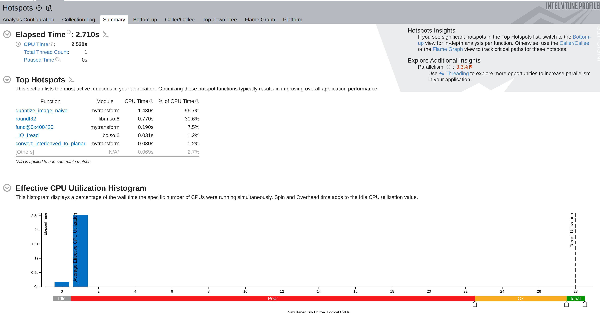

Experimental Design, Profiling, and Performance/Energy Optimization¶
Plot Example - Intro¶
In the following slides, you will be shown a series of plots; mainly taken from the PPN course reports of previous students.
For each plot:
- Try to understand what is represented
- Explain what you observe
- Give a definitive conclusion from the data shown
Raise your hands when ready to propose an explanation.
Plot Example (1)¶

PPN Example - (No Caption)
Plot Example (2)¶

PPN Example - (No Caption)
Plot Example (3)¶

PPN Example - (No Caption)
Plot Example (4)¶

PPN Example - "Récapitulatif des optimisations faites"
Plot Example (5)¶
PPN Example - "Nouveau tracé de la latence cache"
Plot Example (6)¶
Prof Example - (KNM): (a) Speedup map of GA-Adaptive (7k samples) over the Intel MKL hand-tuning for dgetrf (LU), higher is better. (b) Analysis of the slowdown region (performance regression). (c) Analysis of the high speedup region. \(3,000\) random solutions were evaluated for each distribution.
Plot Example (7)¶

Prof Example - (SPR): Geometric mean Speedup (higher is better) against the MKL reference configuration on dgetrf (LU), depending on the sampling algorithm. 46x46 validation grid. 7k/15k/30k denotes the samples count. GA-Adaptive outperforms all other sampling strategies for auto-tuning. With 30k samples it achieves a mean speedup of \(\times 1.3\) of the MKL dgetrf kernel.
Plot Example - What makes a good plot¶
Ask yourself:
- What do I want to communicate ?
- What data do I need ?
- Is my plot understandable in ~10 seconds ?
- Is my plot self-contained ?
- Is the context, environment, and methodology clear ?
Plot Example - Summary¶
HPC is a scientific endeavour; data analysis and plotting are essential.
- Plots drive decisions
- Plots make results trustworthy
- Plots explain complex behaviors
Datasets are large, multi-disciplinary, and often hard to reproduce.
Experimental Methodology¶
Experimental Methodology - Workflow¶
Statistical significance - Introduction¶
Computers are noisy, complex systems:
- Thread scheduling is non deterministic -> runtime varies between runs.
- Dynamic CPU frequency (Turbo/Boost)
- Systems are heterogeneous (CPU/GPU, dual socket, numa effects, E/P cores)
- Temperature/thermal throttling can alter runtime
How can we make sure our experimental measurements are reliable and conclusive?
Statistical significance - Warm-up effects¶
Systems need time to reach steady-state:

On a laptop: \(\mathrm{Mean} = 0.315\ \mathrm{ms},\ \mathrm{CV} = 13.55\%\)
We need "warm-up" iterations to measure stable performance and skip cold caches, page faults, frequency scaling.
Statistical significance - Noise mitigation¶
Noise can only be mitigated:
- Stop all other background processes (other users)
- Stabilize CPU Frequency (
sudo cpupower -g performance)- Make sure laptops are plugged to avoid powersaving policies
- Pin threads via
taskset,OMP_PLACESandOMP_PROC_BIND - Consider hyperthreading
- Use stable compute nodes
Meta-repetitions are essential to mitigate noisy measurements.
Statistical significance - Example¶
Same experiment on a stabilized benchmarking server:
On a laptop: \(\mathrm{Mean} = 0.315\ \mathrm{ms},\ \mathrm{CV} = 13.55\%\)
Stabilized node: \(\mathrm{Mean} = 0.582\ \mathrm{ms},\ \mathrm{CV} = 1.14\%\)
Note¶
Timing on a laptop is always subpar
Statistical significance - Mean, Median, Variance¶
Single-run measurements are misleading; we need statistics.
- Mean runtime \(\bar{x} = \frac{1}{n}\sum_{i=1}^{n}x_i\)
- Median: less sensitive to outliers than the mean
- Variance/standard deviation: Measure of uncertainty
- Relative metrics are useful: Coefficient of variation (\(CV = \frac{\sigma}{\bar{x}} \times 100 \%\))
We usually give both the mean and standard deviation when giving performance results. Plots usually show \(\bar{x} \pm 1 \sigma\) as a shaded region around the mean to represent uncertainty.
Note¶
Distribution plots can be useful: stable measurements are often close to Gaussian, even if systematic noise may lead to skewed or heavy-tailed distributions.
Statistical significance - Confidence Intervals¶
How to decide how many repetitions we should perform ?
- Usually, the costlier the kernels, the less meta-repetitions are expected
- Short or really short kernels should have more metas to reduce the influence of noise
Remember that:
More repetitions increase confidence, but returns diminish:
CI width \(\propto \tfrac{1}{\sqrt{n}}\)
Note¶
Confidence intervals are a bit less common in plots than \(\pm 1 \sigma\) but can also be used !
Statistical significance - p-score & Hypothesis testing¶
In HPC, mean/median and variance often suffice, but hypothesis testing can become handy in some contexts.
- Null hypothesis (\(H_0\)): GPU and CPU have the same performance for small matrixes
- Differences in measurements are only due to noise
-
Alternative hypothesis: CPU is faster for small matrixes
-
p-value is the probability that \(H_0\) explains a phenomenon.
- If \(p < 0.05\), we can safely reject \(H_0\) (Statistically significant difference)
Example: \(\bar{x}_{GPU} = 5.0 \mathrm{s}\), \(\sigma_{GPU} = 0.20\), \(\bar{x}_{CPU} = 4.8 \mathrm{s}\), \(\sigma_{CPU} = 0.4\), Two-sample t-test with 10 samples \(p = 0.02\).
The measured differences between CPU and GPU execution time are statistically significant.
Experimental Methodology – Reproducibility¶
Reproducibility is a very hot topic (Reproducibility crisis in science):
- Data and protocols are first-class citizens: as important as the plots themselves
- Transparency matters: make data, scripts, and parameters accessible
- Enables others to verify, build on, and trust your results
Note¶
Beware of your mindset: your results should be credible and honest before being "good".
"Our results are unstable, we have yet to understand why, this is what we tried" is a completely valid answer
Plotting Tools¶
Plotting tools - Cheetsheet¶
| Name | Use |
|---|---|
| pandas | Storing and saving tabular data |
| numpy | Numerical arrays, manipulating data |
| matplotlib | Basic 2D plots, full control |
| seaborn | Statistical plots, higher-level API |
| logging | Logging experiment progress/results |
| OpenCV | Image processing, animations/videos |
| ffmpeg | Generating and encoding videos |
Lookup the quick reference plotting gallery in the annex!
Both matplotlib and seaborn provide extensive online galleries.
[Live Example of the matplotlib gallery https://matplotlib.org/stable/gallery/index.html]
Plotting tools - Matplotlib¶
Matplotlib is one of the most widely used plotting libraries.
A figure is built hierarchically from nested elements:
- Figure (The canvas)
- (Subfigures)
- Axes (One or more subplots)
- Axis (x/y/z scales, ticks, labels)
- Artists (Lines, markers, text, patches, etc.)
- Data is plotted using axis-level functions like
ax.plot,ax.histogram - Customization occurs at both the Figure and Axes levels
- Complex multi plots layout occur at the Figure level
Plotting tools - Matplotlib¶

Plotting tools - Matplotlib¶
import matplotlib.pyplot as plt
x = [0, 1, 2, 3]
y = [2.8, 5.7, 12.5, 14]
# Create a new figure, single axis
# Size is 8 inches by 8 inches, and constrained layout
fig, ax = plt.subplots(figsize=(8, 8), layout="constrained")
# Plot a simple line
ax.plot(x, y, color="red", label="My Algorithm")
# Customize the axes
ax.set_xlabel("Iteration") # Name of the X axis
ax.set_ylabel("Time (s)") # Name of the y axis
# Title of the plot
ax.set_title("Evolution of Time with the number of iteration")
ax.margins(0, 0) # Remove white spaces around the figure
ax.legend(loc="upper right") # Draw the legend in the upper right corner
fig.savefig("my_plot.png", dpi=300) # Higher DPI -> bigger image
plt.close() # End the plot and release resources
Plotting tools - Matplotlib (Multi axis)¶
We can easily have multiple plots on the same figure:
nrows = 5, ncols = 1
fig, axs = plt.subplots(5, 1, figsize(8 * ncols, 3 * nrows))
ax = axs[0]
ax.plot()
...
ax = axs[1]
ax.plot()
...
fig.tight_layout() # Alternative to constrained layout
fig.savefig("my_multiplot.png", dpi=300)
Each axis is its own plot, with its own legend and artists.
Note¶
Use the reference (https://matplotlib.org/stable/api/index.html) and gallery (https://matplotlib.org/stable/gallery/index.html) extensively !
Plotting tools - Seaborn¶
Seaborn is an extension of Matplotlib dedicated to statistical visualization:

It's useful for histograms, bar charts, kdeplots, scatterplots, and is overall a very good companion library.
Plotting tools - Seaborn¶
import matplotlib.pyplot as plt
import seaborn as sns
import pandas as pd
import numpy as np
df = pd.read_csv(...) # Read the dataframe from somewhere
fig, ax = plt.subplots(figsize=(8, 8), layout="constrained")
# We must pass the axis to plot on as an argument
sns.kdeplot(data=df, x="Time", label="Algorithm", color="red", fill=True, ax=ax)
ax.set_title("Distribution of Execution time for the algorithm")
ax.margins(0, 0)
ax.set_xlabel("Time (s)", fontweight="bold")
ax.set_ylabel("Density", fontweight="bold")
ax.set_xticks(np.linspace(df["Time"].min(), df["Time"].max(), 10)
# Format the x axis ticks: `3.25s`
ax.xaxis.set_major_formatter(StrMethodFormatter("{x:.2f}s"))
fig.savefig("my_distribution.png")
https://matplotlib.org/stable/gallery/ticks/tick-formatters.html
Profiling¶
Profiling - Motivation¶
- HPC codes are massive, complex and heterogeneous
- Humans are bad at predicting bottlenecks
- Don’t blindly optimize everything
- Profiling guides optimization
Remember: Always profile first.
Profiling - Amdahl's law¶
Where f is the fraction of program improved, and S is the speedup on that fraction.
Example:
- I have optimized 80% of my application, with a speedup of x10
- In total, my application is now \(\frac{1}{0.2 + (0.8 / 10)} = 3.57 \times\) faster
The 20% are a bottleneck !
Profiling - Steps¶
- Where (Hotspots) ?
- What functions are we spending time/energy in ?
- What call-tree are we spending time/energy in ?
- Why ?
- Arithmetic density, memory access patterns
- Cache misses, branch misspredictions, vectorization efficieny (Hardware counters)
- What goal ?
- Should I optimize for speed ? For energy ? Memory footprint ?
- What about cold storage size/compression ?
- Do I have constraints (i.e. limited memory) ?
- Should I optimize or switch algorithm ?
Profiling - Time¶
It's rather easy to benchmark a single function using a (high-resolution monotonic) clock:
Very simple way to evalute a function cost
Profiling - Time (Stability)¶
But we have to account for noise:
for _ in range(NWarmup):
my_function()
times = []
for _ in range(NMeta):
begin = time.perf_counter()
my_function()
times.append(time.perf_counter() - begin)
median = np.median(times)
std = np.std(times)
print(f"Time: {median} +/- {std}")
We must check that our measures are valid !
Profilers - Introduction¶
Full application -> Thousands of functions to measure !
- Profilers are tools to automate this
- Two main types:
- Sampling: Pause the program and log where the program is (Costly functions -> More samples !)
- Instrumentation: Modify the program to automatically add timers
Profilers can also check for thread usage, vectorization, memory access, etc.
Perf - Record¶
Linux Perf is a powerful and versatile profiler:
perf record -g -- python3 ./scripts/run_bls.py kepler-8
[ perf record: Woken up 255 times to write data ]
[ perf record: Wrote 85.474 MB perf.data (1220354 samples) ]
pert report perf.out
It's a great tool to quickly get a Tree stack without any dependencies.
Profiling - Hardware counters¶
In reality, perf is not realy a profiler !
- The Linux Perf API can be used to access many hardware counters
- Perf record is just one usage of perf
Most CPUs/GPUs have hardware counters that monitors different events:
- Number of cycles
- Number of instructions
- Number of memory access
- RAPL
Profiling - Perf for Hardware counters¶
perf stat -e cycles,instructions python3 ./scripts/run_bls.py kepler-8
{'period': 3.520136229965055, 'duration': 0.11662673569985234, 'phase': 0.43, 'depth': 0.004983530583444806, 'power': 0.028861678651344452}
Performance counter stats for 'python3 ./scripts/run_bls.py kepler-8':
962,187,248,452 cpu_atom/cycles/ (43.66%)
1,119,319,677,606 cpu_core/cycles/ (56.34%)
3,547,146,665,075 cpu_atom/instructions/ # 3.69 insn per cycle (43.66%)
2,837,633,772,530 cpu_core/instructions/ # 2.54 insn per cycle (56.34%)
12.507192456 seconds time elapsed
VTune¶
The Intel VTune profiler is more complex but more self-contained than perf:

VTune - CPU Usage¶

VTune - HPC Performance¶
VTune has multiple collection mode:

Other profilers¶
- MAQAO is a profiler developped by the LIPARAD
- AMD, NVIDIA and ARM have their own profilers for their platforms
- And many, many others (likwid, gprof, etc.)
Usually, we combine a "quick" profiler like gprof/perf record with a more indepth one when needed.
Profiling - Energy¶
Energy is a growing concern:
- One HPC cluster consume millions of dollars in electricity yearly
- ChatGPT and other LLM are computationally intensive:
- Nvidia GPUs consumes lots of energy
On the flip side, measuring energy is harder than measuring time.
Many actors still focus on execution time only -> Energy is perceived as "Second rank"
Profiling - RAPL¶
Running Average Power Limit (RAPL) is an x86 hardware counter that monitors energy consumption:
- Energy is tracked at different level
- Core, Ram, Package, GPU, etc.
- It does not account for secondary power consummers (Fans, Water cooling, etc.)
- RAPL is not event based: The entire machine is measured ! (Background processes, etc.)
It requires sudo permissions to access (compared to a clock)
perf stat -a -j -e power/energy-pkg,power/energy-cores <app>
{"counter-value" : "88.445740", "unit" : "Joules", "event" : "power/energy-pkg/", "event-runtime" : 10002168423, "pcnt-running" : 100.00}
{"counter-value" : "10.848633", "unit" : "Joules", "event" : "power/energy-cores/", "event-runtime" : 10002166697, "pcnt-running" : 100.00}
Profiling - Watt-Meter¶

Hardware solutions are also available to monitor energy consumption. They typically have a slow sampling resolution (\(\approx 1s\)) and are harder to scale to entire clusters.
On the flip side, they give precise power measurements compared to RAPL.
Profiling - RAPL accuracy¶

In practice, RAPL underestimates power consumption, but trends are correctly matched.